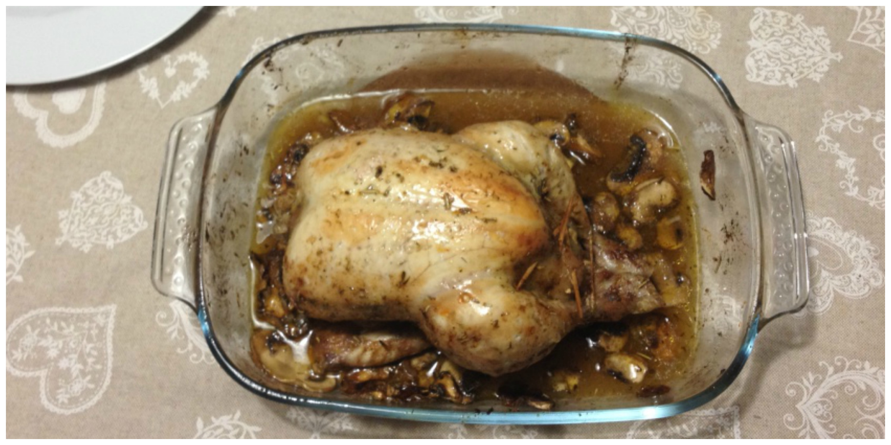
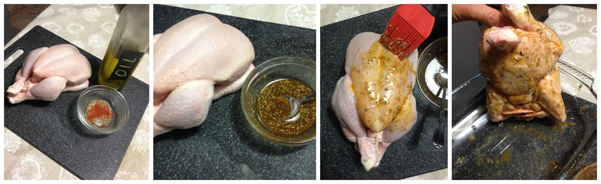
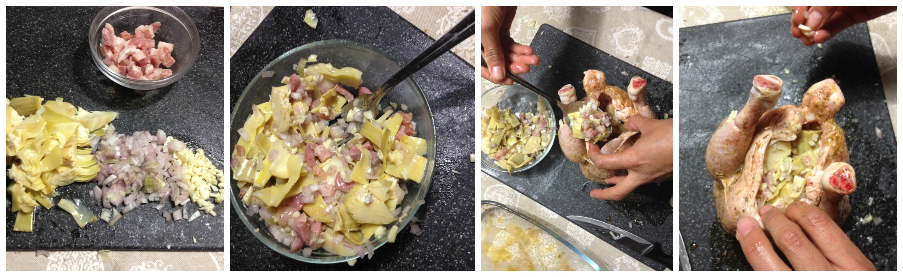
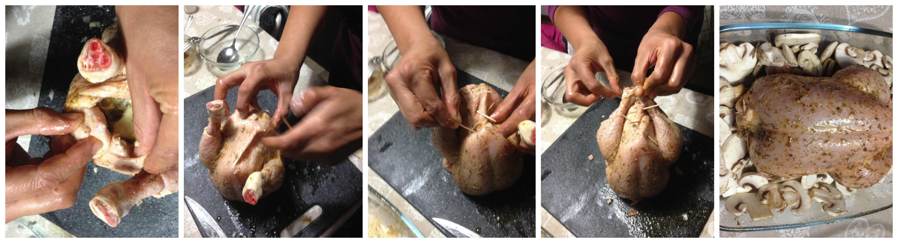
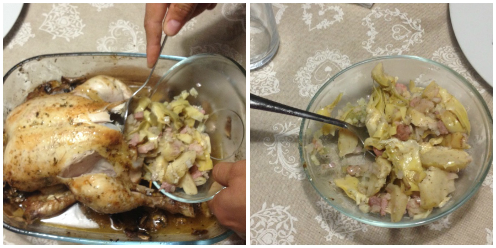

Stuffed chicken with champignons¶

- Serves: 4
- Type: main
Background¶
I was thinking about Christmas. I was thinking about a delicious stuffed turkey, but it is only October. Not turkey and not my grandma’s especial stuffing. I admit that I was obsessed with stuffed poultry so I decided to improvised a recipe and I was not disappointed.
Ingredients¶
Chicken
- A whole medium chicken
- Olive oil
- 1 tablespoon dried rosemary
- 1 tablespoon paprika powder
- 1 teaspoon dried sage
- 1 teaspoon dried thyme
- 1 teaspoon dried marjoram
- 300 grams sliced champignons
Stuffing
- 1 canned artichokes in oil
- 1 tablespoon lemon juice
- 100 grams diced bacon
- 1 diced red onion
- 3 diced garlic cloves
Steps¶
Clean and dry the whole chicken
Mix all the spices (salt and pepper included) with olive oil and lemon juice
Smear the chicken with the spices mixture
Preparing the chicken
In a bowl mix the bacon, shallots, garlic, artichokes, add some salt and pepper
Stuff the chicken with the stuffing
Preparing the stuffing
Using toothpicks close the chicken hole or sew it using a needle and thread.
Tie the chicken legs with cooking twine.
Place the champignon slices in a greased baking pin or a pyrex and place on it the stuffed chicken
Closing the chicken
Bake the chicken at 180°C for 1 hour
Once ready, carefully, open the chicken hole and remove the chicken stuffing placing it in a bowl.
Buon appetito!
Cut the chicken in pieces and serve warm